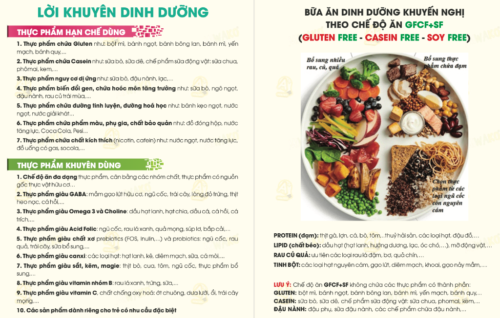

Định hướng dinh dưỡng hỗ trợ làm dịu tiêu hóa, nâng cao thể trạng và hỗ trợ hành vi cho trẻ bằng phương pháp phù hợp với gia đình.
10 nhóm vi chất và thực phẩm tự nhiên giúp ổn định dẫn truyền thần kinh, nâng cao sự tập trung và cải thiện giấc ngủ cho trẻ.
10 nhóm thực phẩm có thể kích thích hệ thần kinh nhạy cảm hoặc gây quá tải cho hệ tiêu hóa của trẻ mà ba mẹ cần hạn chế tối đa.
Cân đối 4 nhóm chất thiết yếu theo chế độ GFCF+SF (Không Gluten - Không Casein - Không Đậu Nành) và mẫu thực đơn 1 ngày dễ nấu tại nhà.

Rau ngót, cải bó xôi, bông cải xanh, bí đỏ, cà rốt, củ dền, chuối tiêu, táo, quả mọng ít ngọt.
Thịt gà sạch, thịt lợn nạc, cá đồng, cá hồi, tôm tươi, các loại đậu hạt an toàn (đậu xanh, đậu đen).
Gạo lứt, diêm mạch (quinoa), hạt kê, khoai lang, khoai sọ, yến mạch không gluten.
Dầu hạt ép lạnh (dầu mè, hạt chia, dầu hạt lanh), dầu ô liu nguyên chất, quả bơ chín.
Nấu gạo tẻ mềm cùng thịt gà nạc, bí đỏ nghiền và hạt sen bở thơm lừng.
Cá hồi áp chảo dầu ô liu, canh rau ngót nấu tôm tươi băm, ăn kèm cơm tẻ dẻo mềm hoặc cơm gạo lứt.
Sữa chua lên men từ sữa dừa hoặc sữa hạnh nhân tự nấu, trộn cùng một ít việt quất hoặc táo hấp mềm.
Thịt lợn nạc thái nhỏ xào bông cải xanh và cà rốt, canh củ dền hầm sườn nạc, ăn kèm khoai lang hoặc cơm mềm.
Khẩu phần và cách chế biến (xay nhuyễn, thái hạt lựu nhỏ, hầm mềm) cần linh hoạt theo độ tuổi, khả năng nhai nuốt và phản ứng cảm giác của từng trẻ. Mẹ không ép con ăn lượng quá lớn ngay từ đầu mà tăng dần theo nhu cầu tự nhiên của bé.
Đổi món cho con cần kiên nhẫn, khoa học và không gây áp lực cho cả mẹ lẫn con.
Giảm dần lượng thực phẩm cũ từng tuần để cơ thể và tâm lý của con thích nghi tự nhiên, tránh phản kháng dữ dội.
Thay sữa bò bằng sữa hạt tự nấu, thay bánh mì thường bằng bánh mì bột gạo hoặc khoai lang để con không có cảm giác bị tước đoạt.
Quan sát hình thái phân, thời lượng giấc ngủ và tâm trạng của con sau mỗi món mới để kịp thời điều chỉnh lượng ăn cho phù hợp.
Nếu mẹ đang băn khoăn về chế độ ăn của con hoặc bé đang kén ăn nặng, hãy đặt lịch hẹn trao đổi trực tiếp cùng Chuyên gia dinh dưỡng Bùi Thu Hiền.
Tài liệu gợi ý thực đơn và hướng dẫn dinh dưỡng gửi trực tiếp qua Zalo.